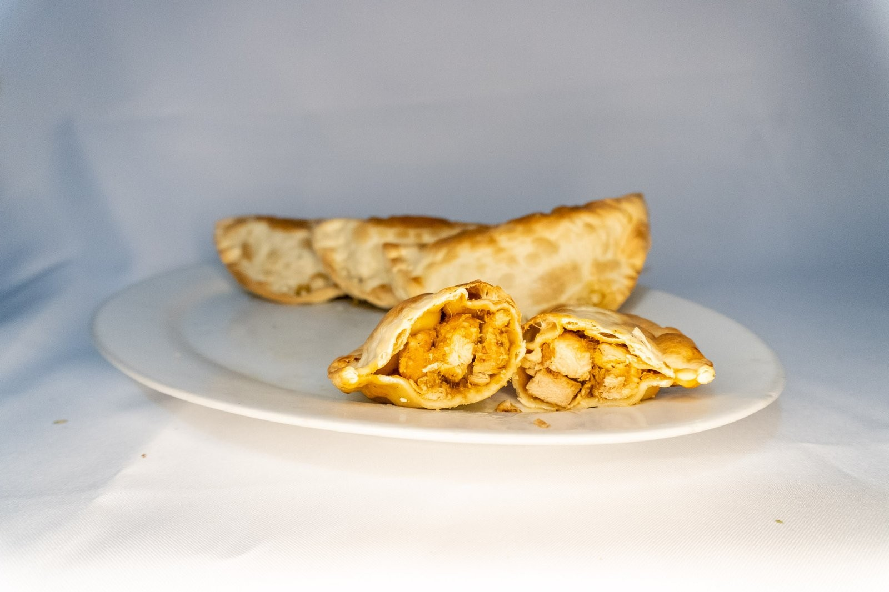

Lo que cambia
La misma empanada de siempre.Pero al horno.
Masa dorada, relleno con sazón de casa y nada de freidora.

Masa dorada, relleno con sazón de casa y nada de freidora.



Res, pechuga, jamón ahumado y queso, hawaiana, champiñón, carne con arroz… Hay una para cada persona de la mesa.
La Séptima, Cl. 7 #4-79 · Cajicá
Al lado del parasol rojo